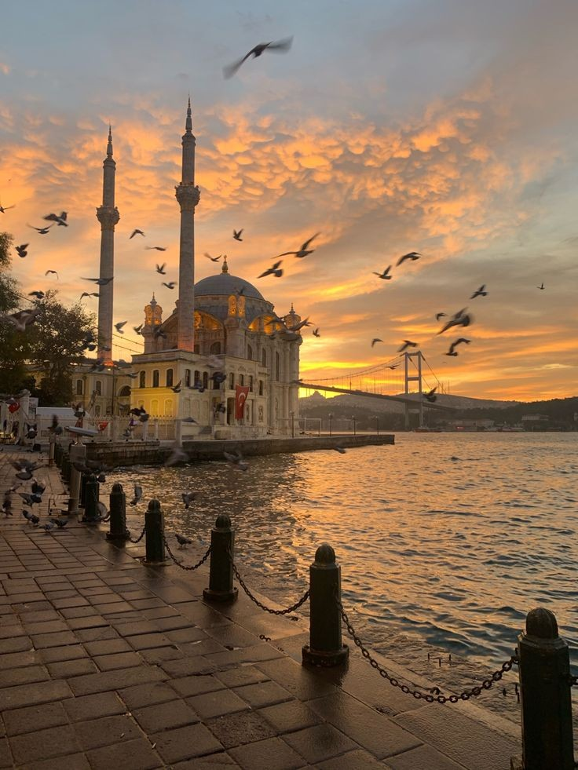
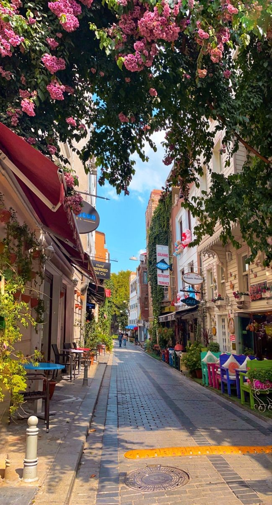
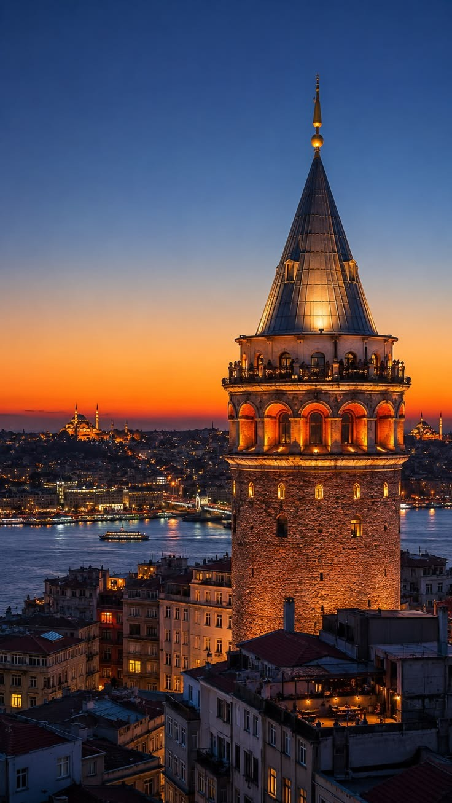

تركيا:جوهرة القارات
تعد تركيا دوله فريدة من نوعها,فهي تقع في منطقة استراتيجية تربط بين قارتي اسيا وأروبا.
تعتبر تركيا وجهة استثنائية تجمع بين عراقة التاريخ وجمال الطبيعه



الموقع الجغرافي والمناخ:
- الموقع:يقع الجزء الاكبر في شبه الجزيرة الاناضول
- الحدود:تحدها 8 دول
- المناخ:يتميز مناخها بالتنوع
التحدي بين الاصالة والحداثة:
تعيش تركيا اليوم في حالة من التوازنالفريد؛فهي تحافظ على جذورها التاريخية العميقة وقيمها الاجتماعية
جولة بصرية
الاقتصاد
- السياحة:
تعد تركيا من اكثر الوجهات السياحية في العالم بفضل معالمها التاريخية وطبيعتها الخلابة.
- الصناعة:
تشتهر بتصنيع السيارات؛المنسوجات؛والاجهزة المنزلية؛وتصديرها للعديد من دول العالم.
- الزراعة:
تعد تركيا من الدول الرائدةعالمياً في انتاج وتصدير بعض المحاصيل مثل البندق؛التين؛والمشمش.
التاريخ السياسي:
الدول العثمانيه: كانت مركزاً للخلافة الاسلامية لعدة قرون؛ووصلت الى اوج قوتها في عهد السلطان سليمان القانوني.
تأسيس الجمهورية:في عام 1923 أسس مصطفى كمال أتاتورك الجمهورية التركية الحديثة
إسطنبول قلب العالم القديم:
تظل إسطنبول
(القسطنطينية سابقاً)
ايقونة تركيا ؛هي المدينة الوحيدة في العالم التي تقف على قارتين.
لماذا يجب ان تزورها؟
تنوع ثقافي وتاريخي مذهل
طبيعه خلابه وشواطئ فيروزية
مطبخ عالمي لاينُسى
عمل الطالبه:سهى جلال جواد راجح